Zebra Shift guide · 28 pictures
ECG patterns to know
Each tracing below is a full 12-lead layout at 25 mm/s and 10 mm/mV, with a long rhythm strip of lead II underneath. Find the pattern first, then check what it is most often confused with.
Read the rhythm and rate, then the intervals, then the ST segments and T waves, lead by lead. Most of the patterns here are one clear finding against an otherwise ordinary ECG.
Anterior ST elevation in V1–V4: anterior STEMI

ST elevation across V1–V4 with reciprocal inferior depression is an anterior STEMI, usually the LAD. Call the cath lab.
Often confused with: Inferior ST elevation: inferior STEMI · Widespread saddle-shaped ST elevation: pericarditis · Normal ECG
In the game: ST-Elevation Myocardial Infarction
Tall peaked T waves, wide QRS, flat P waves: hyperkalaemia
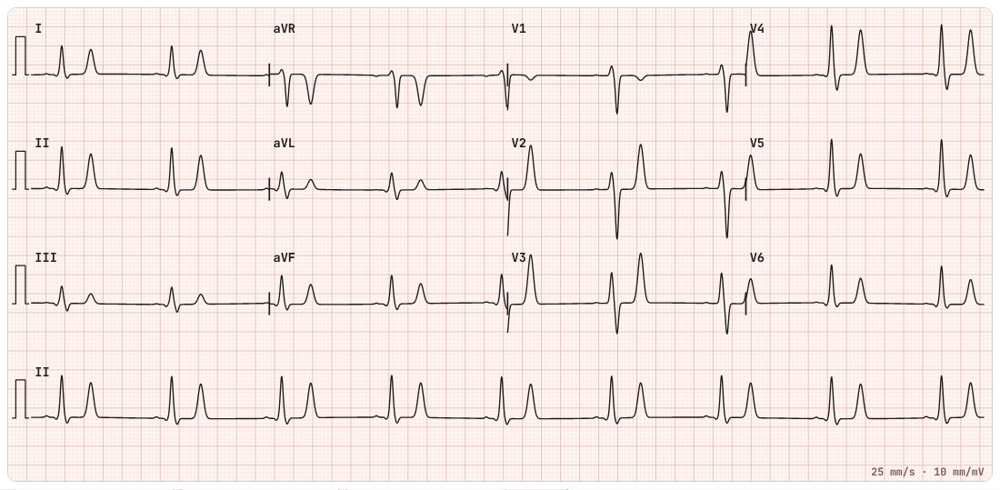
Narrow, tented T waves in many leads with a broadening QRS and fading P waves is hyperkalaemia until proven otherwise. Give IV calcium now.
Often confused with: Hyperacute T waves of an anterior STEMI · Hypokalaemia with U waves · Benign early repolarisation
In the game: Hyperkalaemia, Crush Syndrome
Widespread concave ST elevation with PR depression: pericarditis
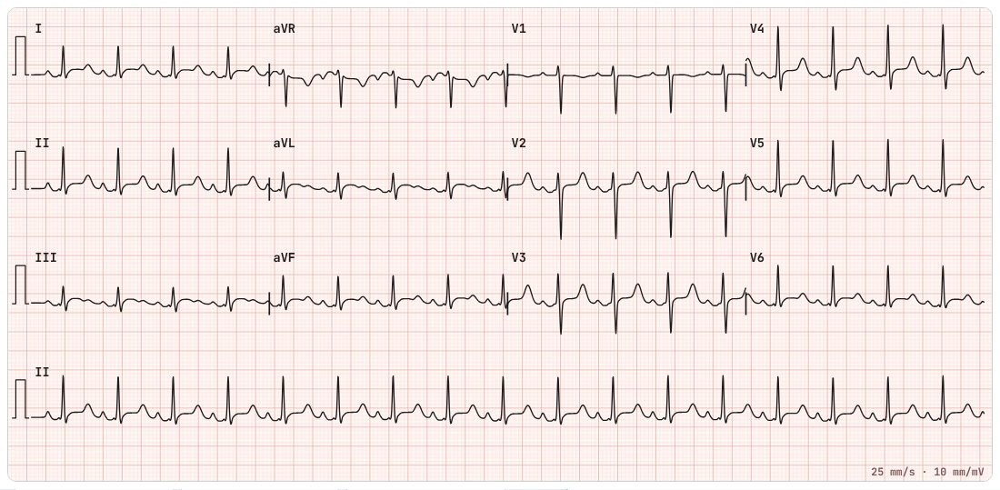
Saddle-shaped ST elevation in most leads, PR depression, and the opposite (ST depression, PR elevation) in aVR. It does not follow one coronary territory.
Often confused with: Anterior STEMI · Brugada pattern · Wellens pattern
In the game: Acute Pericarditis
Coved ST elevation in V1–V2 with T inversion: Brugada type 1
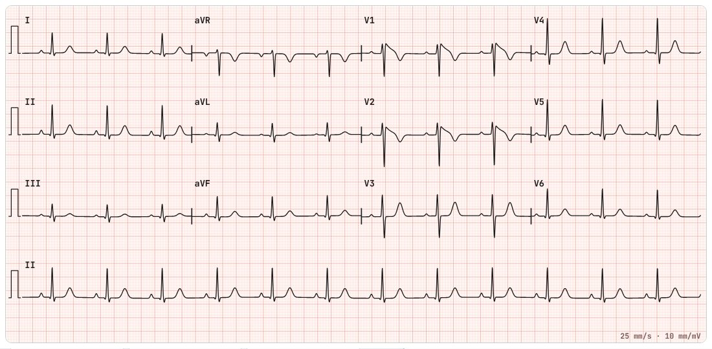
A coved ST segment of 2 mm or more that slopes down into an inverted T wave in V1–V2 is the type 1 Brugada pattern: a risk of sudden death.
Often confused with: Right bundle branch block only · Anterior STEMI · Wellens pattern
In the game: Brugada Syndrome
Deep symmetrical T inversion in V2–V3: Wellens type B (critical LAD)
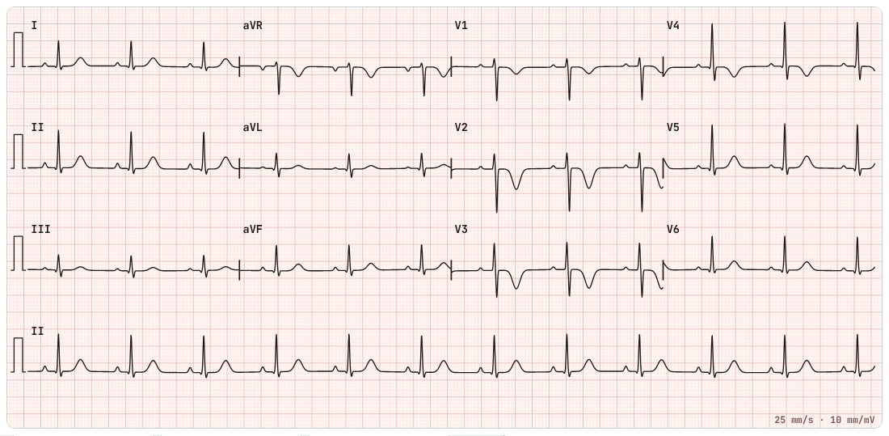
Deep, symmetrical T-wave inversion in V2–V3 in a pain-free patient is Wellens syndrome: a tight proximal LAD stenosis. Do not stress test.
Often confused with: Normal juvenile T waves · Posterior MI · Hypokalaemia
In the game: Wellens Syndrome
Biphasic T waves in V2–V3: Wellens type A (critical LAD)
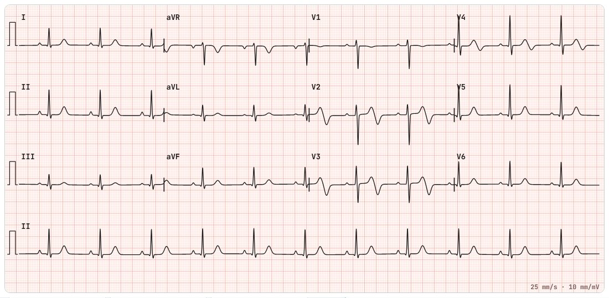
T waves in V2–V3 that go up and then sharply down, in a patient whose chest pain has settled: the less common type A Wellens pattern. Like type B, it warns of a tight proximal LAD stenosis. Do not stress test.
Often confused with: Hyperacute T waves of an evolving STEMI · Hypokalaemia with U waves · Normal ECG
Irregularly irregular with no P waves: AF with a fast rate
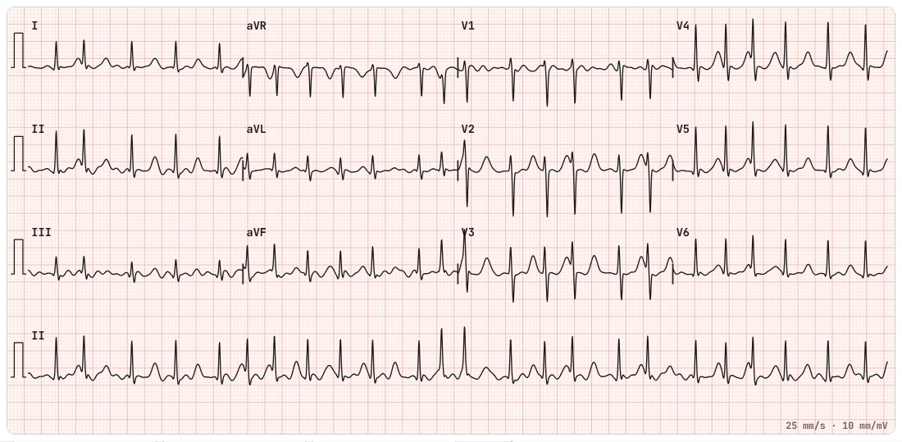
No organised P waves, a wavy baseline and completely irregular R–R intervals: atrial fibrillation.
Often confused with: Sinus tachycardia · Atrial flutter with 2:1 block · AV nodal re-entry tachycardia
In the game: Atrial Fibrillation with Fast Ventricular Rate, Thyroid Storm
Sinus tachycardia, S1Q3T3, right heart strain: think PE
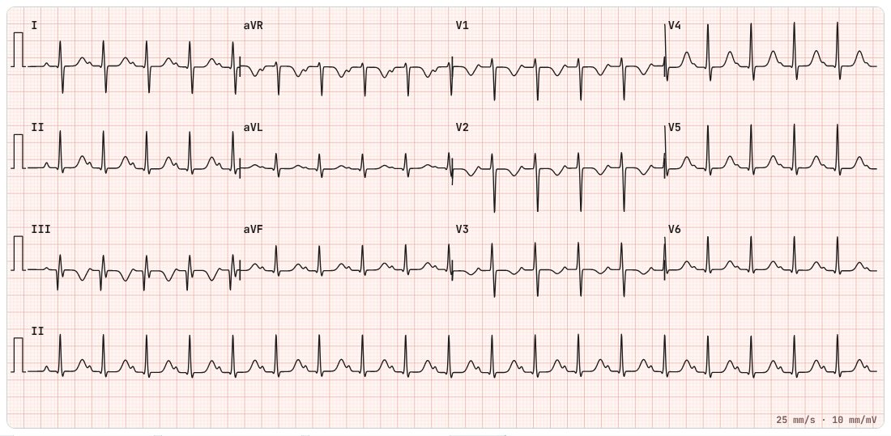
A deep S in I, a Q and inverted T in III, and T inversion in V1–V3 with a tachycardia suggest right heart strain. Sinus tachycardia is still the commonest PE finding.
Often confused with: Inferior STEMI · Left bundle branch block · Normal sinus rhythm
In the game: Pulmonary Embolism
Slow AF with scooped "reverse tick" ST depression: digoxin effect
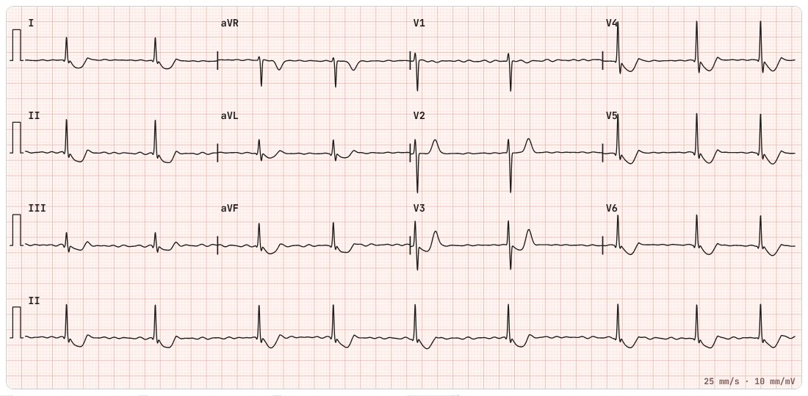
Sagging, scooped ST depression that rises into a small T wave (the reverse tick) with a slow ventricular rate fits digoxin. Toxicity is clinical plus the level and potassium.
Often confused with: Lateral STEMI · Hyperkalaemia · Complete heart block
In the game: Digoxin Toxicity
Bradycardia with J (Osborn) waves: hypothermia
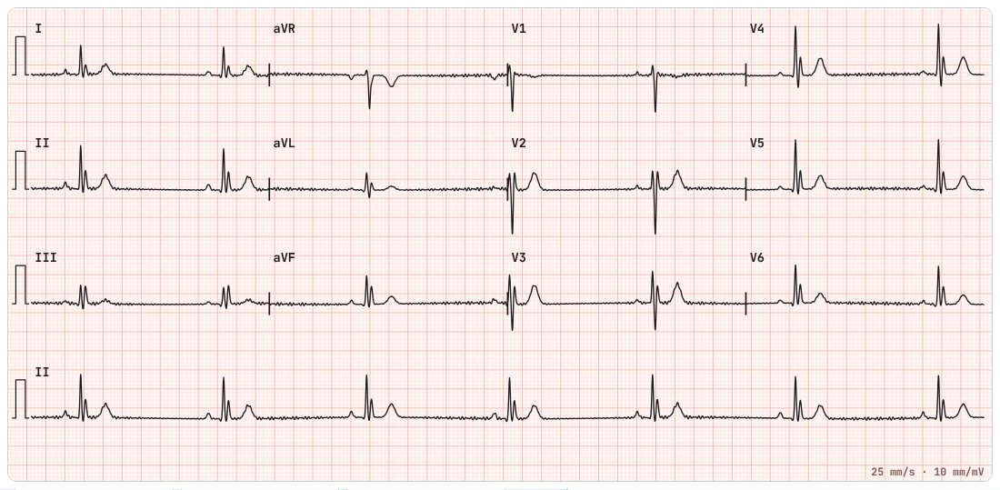
A positive hump at the J point after the QRS, a slow rate and shivering artefact: Osborn waves of hypothermia. They shrink as the patient warms.
Often confused with: Brugada pattern · Hyperkalaemia · Delta waves of WPW
In the game: Accidental Hypothermia
Complete heart block: P waves and QRS complexes dissociated
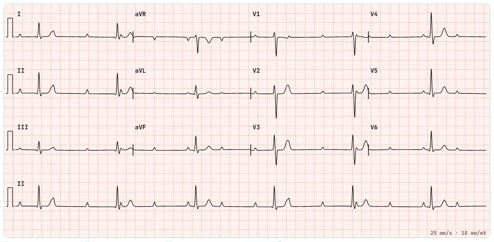
P waves march through at their own rate with no fixed relation to the slow, regular QRS complexes: third-degree (complete) heart block.
Often confused with: Mobitz I (Wenckebach) · Sinus bradycardia · Mobitz II
In the game: Lyme Carditis, Complete Heart Block
Atrial flutter with 2:1 block: sawtooth waves at 300 a minute
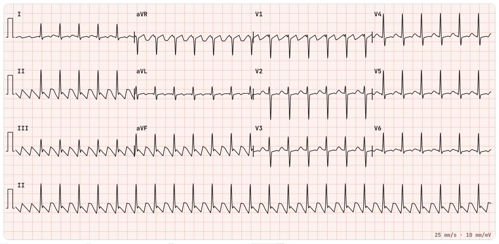
Regular sawtooth flutter waves at 300 a minute, best seen in II, III and aVF, with every second one conducted: a ventricular rate of exactly 150. A regular rate of 150 should always make you look for flutter.
Often confused with: Atrial fibrillation · Sinus tachycardia · AV nodal re-entry tachycardia
In the game: Atrial Flutter
Atrial flutter with 4:1 block: a clear sawtooth baseline
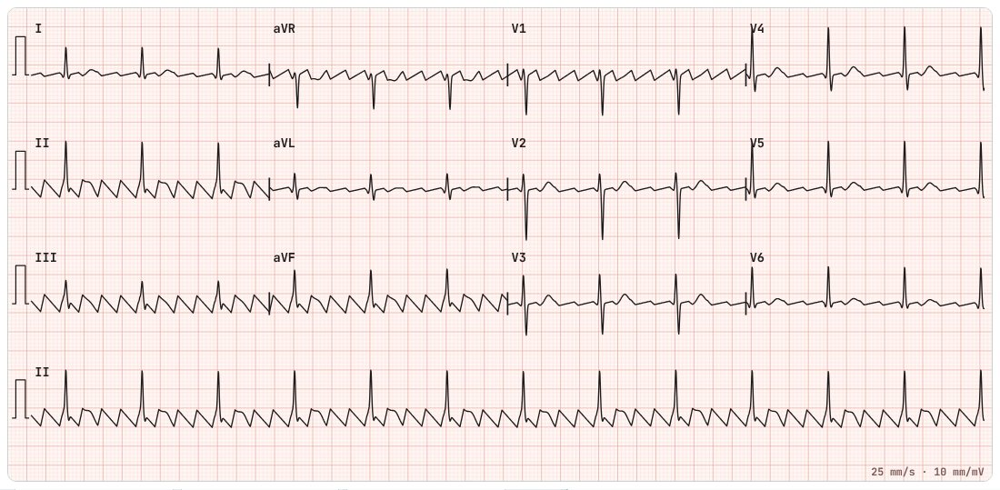
With four flutter waves to every QRS, the baseline between complexes is pure sawtooth at 300 a minute, best seen in II, III, aVF and V1. The ventricular rate is a regular 75.
Often confused with: Atrial fibrillation with a slow rate · Sinus rhythm with artefact · Complete heart block
Sine-wave pattern: severe hyperkalaemia, peri-arrest
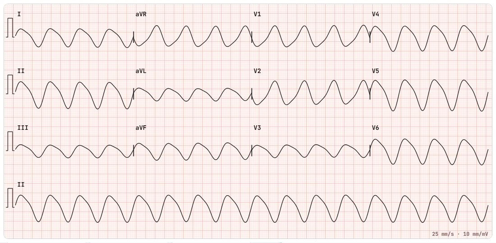
The QRS has widened so far that it merges with the T wave into a smooth sine wave, with no P waves. This is the last rhythm before arrest in severe hyperkalaemia: give IV calcium now.
Often confused with: Ventricular tachycardia · Ventricular fibrillation · Hypothermia with Osborn waves
Regular narrow-complex tachycardia with no visible P waves: SVT (AVNRT)
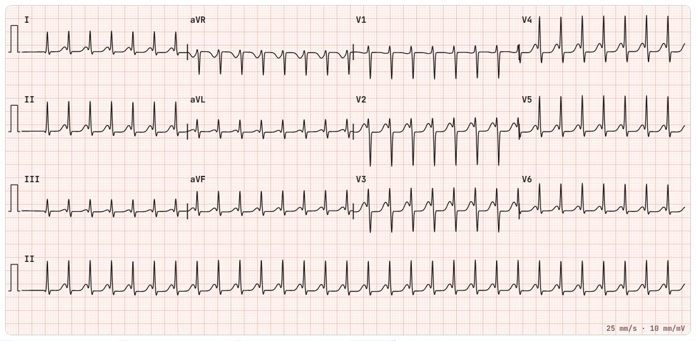
A fast, perfectly regular rhythm with narrow QRS complexes and no P waves before them: re-entry through the AV node. Try vagal manoeuvres, then adenosine.
Often confused with: Sinus tachycardia · Atrial fibrillation · Ventricular tachycardia
In the game: Supraventricular Tachycardia
Broad-complex tachycardia with AV dissociation: ventricular tachycardia
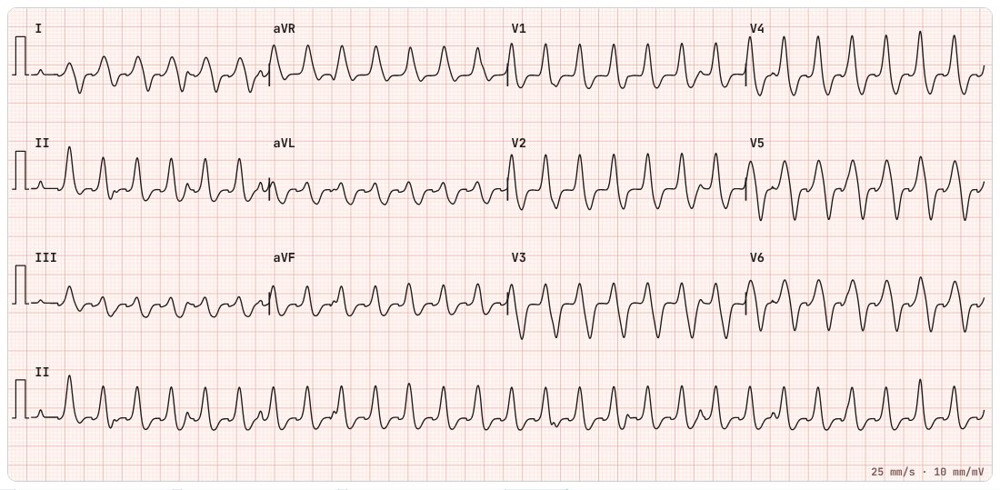
Regular, very broad complexes at about 170 a minute, with P waves marching through at their own slower rate: AV dissociation proves the rhythm comes from the ventricle. Treat a broad, regular tachycardia as VT.
Often confused with: SVT with bundle branch block · Sinus tachycardia · Atrial flutter
In the game: Ventricular Tachycardia
Sinus tachycardia, broad QRS and a tall terminal R in aVR: sodium-channel blockade
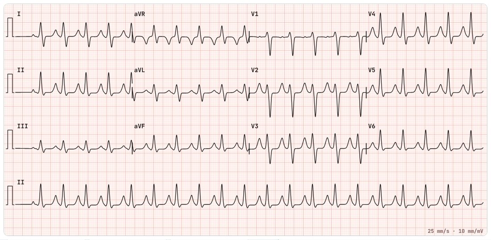
A tachycardia with a QRS over 100 ms, a tall late R wave in aVR and a deep S in I: sodium channels are blocked, classically by a tricyclic. Give sodium bicarbonate.
Often confused with: Hyperkalaemia · Right bundle branch block only · Brugada pattern
In the game: Tricyclic Antidepressant Overdose
Long QT, then polymorphic VT twisting around the baseline: torsades de pointes
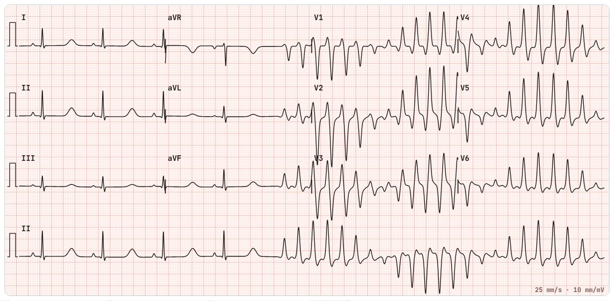
The first beats have a very long QT. Then broad complexes run at about 250 a minute, their height swelling and shrinking so they seem to twist around the line. Give IV magnesium.
Often confused with: Ventricular fibrillation · Monomorphic VT · Atrial fibrillation with bundle branch block
In the game: Torsades de Pointes
Second-degree AV block, Mobitz I (Wenckebach)
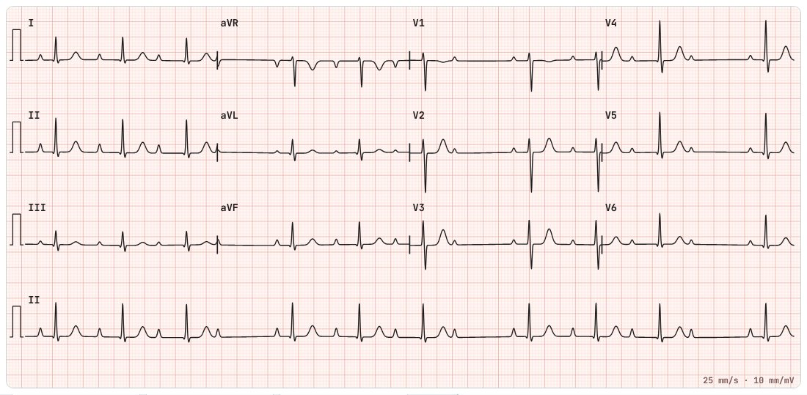
The PR interval gets longer with each beat until a P wave is not followed by a QRS, then the cycle starts again. Usually at the AV node, often from vagal tone or drugs, and rarely dangerous on its own.
Often confused with: Mobitz II block · Complete heart block · Sinus arrhythmia
In the game: Grayanotoxin (Mad Honey) Poisoning
First-degree AV block: PR interval over 200 ms
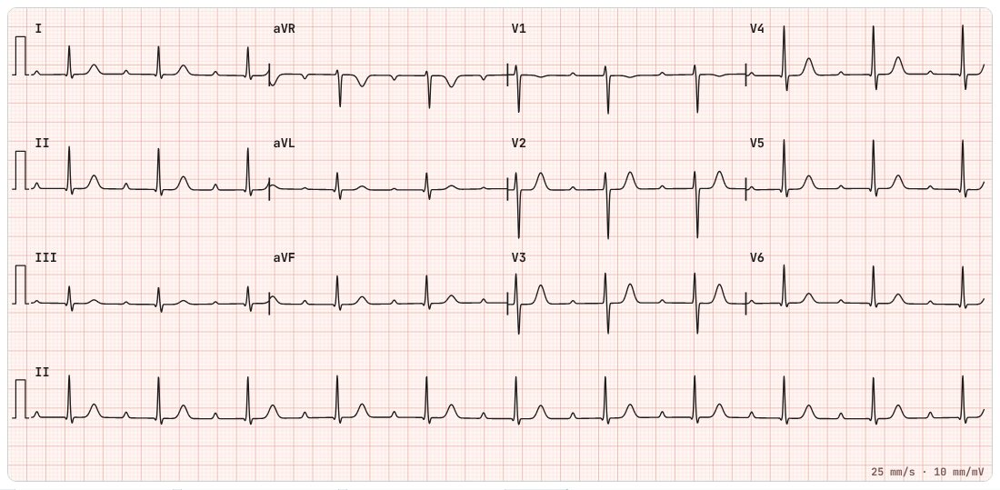
Every P wave is conducted, but each one sits far from its QRS: a fixed PR interval of about 340 ms. Look for the cause: carditis, drugs that slow the AV node, or high vagal tone.
Often confused with: Mobitz I (Wenckebach) · Complete heart block · Normal sinus rhythm
In the game: Acute Rheumatic Fever, Diphtheria
Giant, deep T-wave inversion with a long QT: cerebral T waves
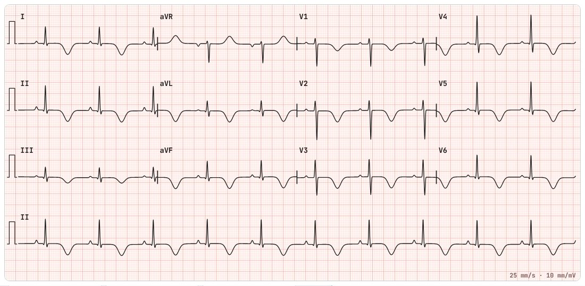
Wide, deep T-wave inversion across many leads with a very long QT. With a sudden severe headache this is the brain talking to the heart, as in subarachnoid haemorrhage.
Often confused with: Wellens pattern · Hyperkalaemia · Normal ECG
In the game: Subarachnoid Haemorrhage
Lateral ST depression and T-wave inversion: ischaemia (NSTEMI)
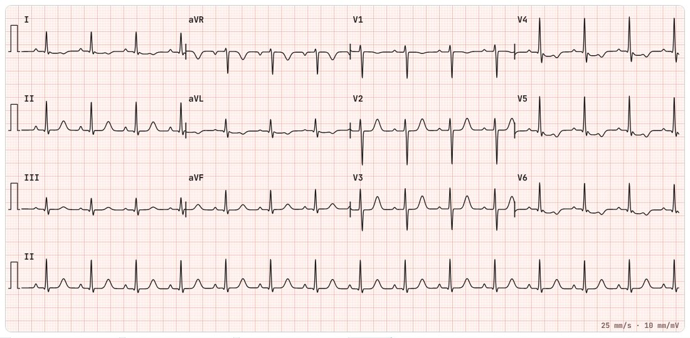
Flat or down-sloping ST depression with T-wave inversion in V4–V6, I and aVL. With chest pain and a rising troponin that is a non-ST-elevation MI.
Often confused with: Lateral STEMI · Digoxin effect · Normal ECG
In the game: Non-ST-Elevation Myocardial Infarction
Left ventricular hypertrophy with strain
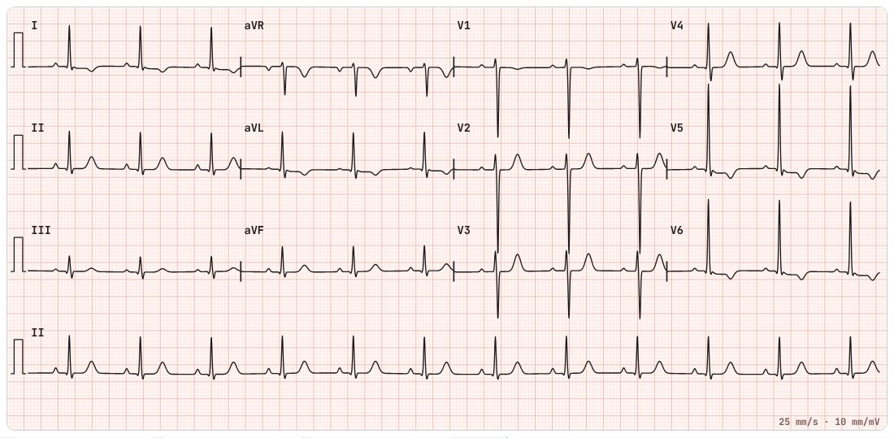
Huge voltages (a deep S in V1–V2 and a tall R in V5–V6) with asymmetrical ST depression and T inversion in the lateral leads: a thick, pressure-loaded left ventricle, as in aortic stenosis or long-standing high blood pressure.
Often confused with: Lateral STEMI · Left bundle branch block · Normal ECG
In the game: Severe Aortic Stenosis
Very large voltages with deep T-wave inversion: hypertrophic cardiomyopathy
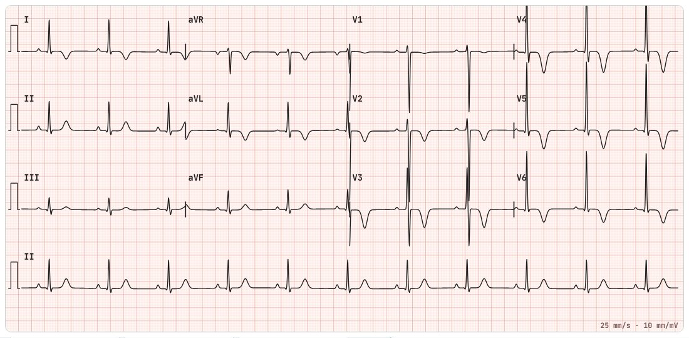
Massive QRS voltages with deep, symmetrical T-wave inversion across the chest leads in a young person who fainted on exertion: think hypertrophic cardiomyopathy and get an echo.
Often confused with: Anterior STEMI · Wellens pattern · Normal athlete's ECG
In the game: Hypertrophic Cardiomyopathy
Right axis deviation with right ventricular strain
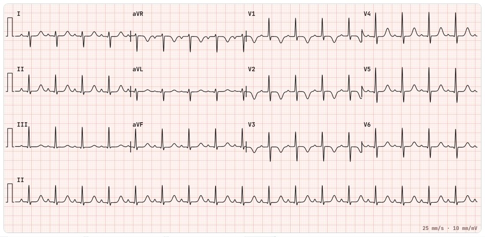
A dominant R wave in V1, a deep S in I with a tall R in III (right axis), and T inversion over the right chest leads: the right ventricle is thick and pressure-loaded.
Often confused with: Left ventricular hypertrophy · Anterior STEMI · Normal ECG
In the game: Pulmonary Arterial Hypertension Crisis
Flat T waves and prominent U waves: hypokalaemia
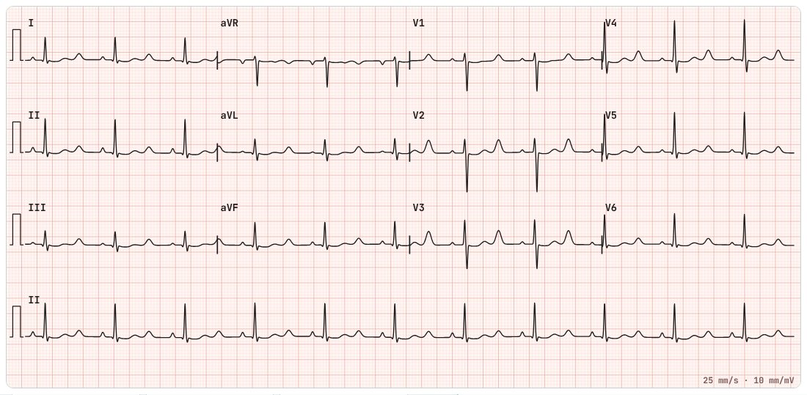
Small, flat T waves with a separate rounded U wave after them, best seen in V2–V3, and slight ST depression: a very low potassium.
Often confused with: Hyperkalaemia · Long QT from drugs · Normal ECG
In the game: Thyrotoxic Periodic Paralysis
Short QT interval: hypercalcaemia
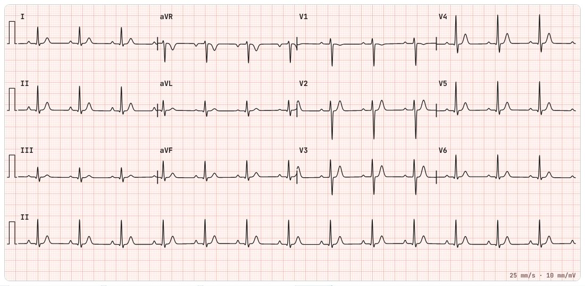
The T wave follows the QRS almost at once, with hardly any ST segment, so the QT is short. With confusion, thirst and constipation, check the calcium.
Often confused with: Long QT: hypocalcaemia · Hyperkalaemia · Normal ECG
In the game: Hypercalcaemia of Malignancy
Low voltage with electrical alternans: think tamponade
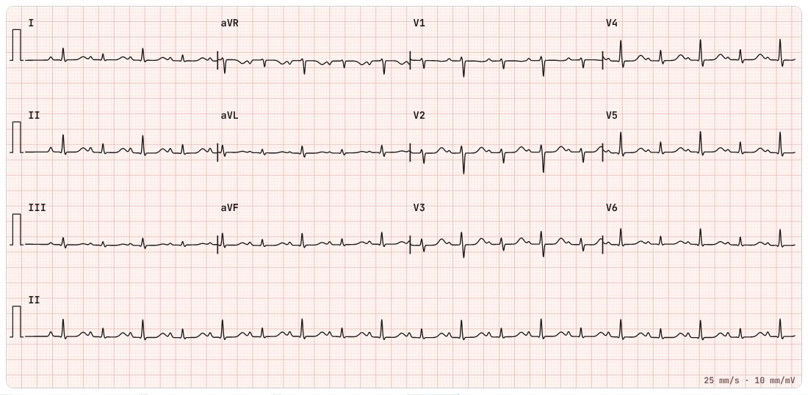
Small complexes whose height alternates beat to beat, with a tachycardia: the heart is swinging in a large effusion.
Often confused with: Atrial fibrillation · Pericarditis without effusion · Normal ECG with lead artefact
In the game: Cardiac Tamponade